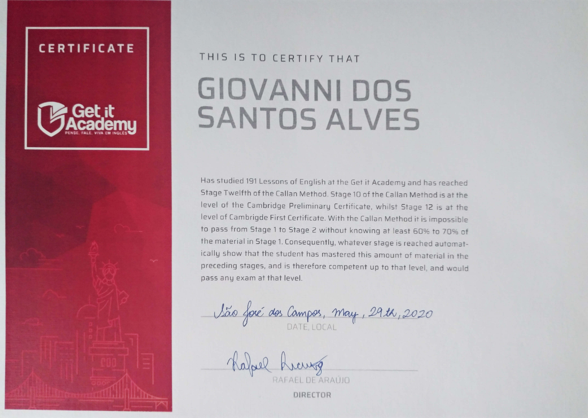
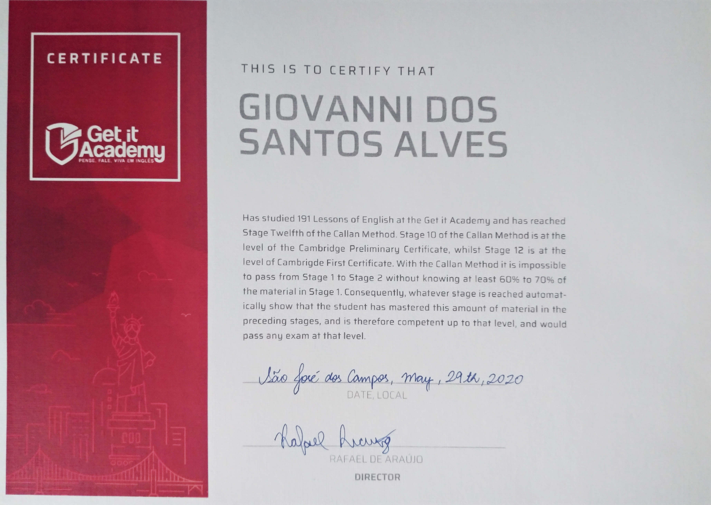
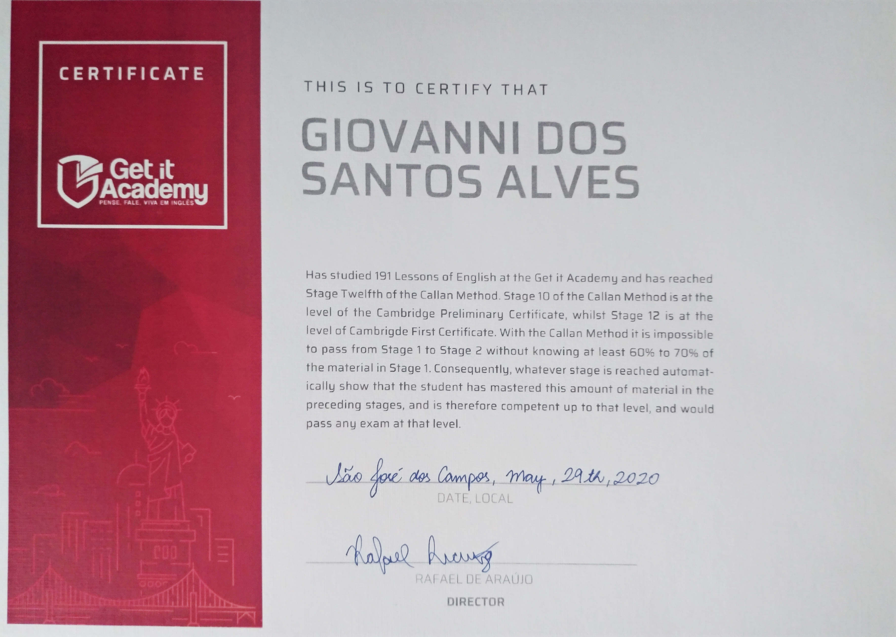

Certificados


 


Eu sou estudante do 2° semestre de Análise e desenvolvimento de sistemas da faculdade de tecnologia FATEC, terminei um curso de inglês do metodo Callan, E estou cursando em outra escola de artes.

Análise de dados publicos - Análise sobre taxa de recuperação e disseminação do Covid-19 no Brasil
Email: giovanni33316@gmail.com
Tel: (12)99632-8418